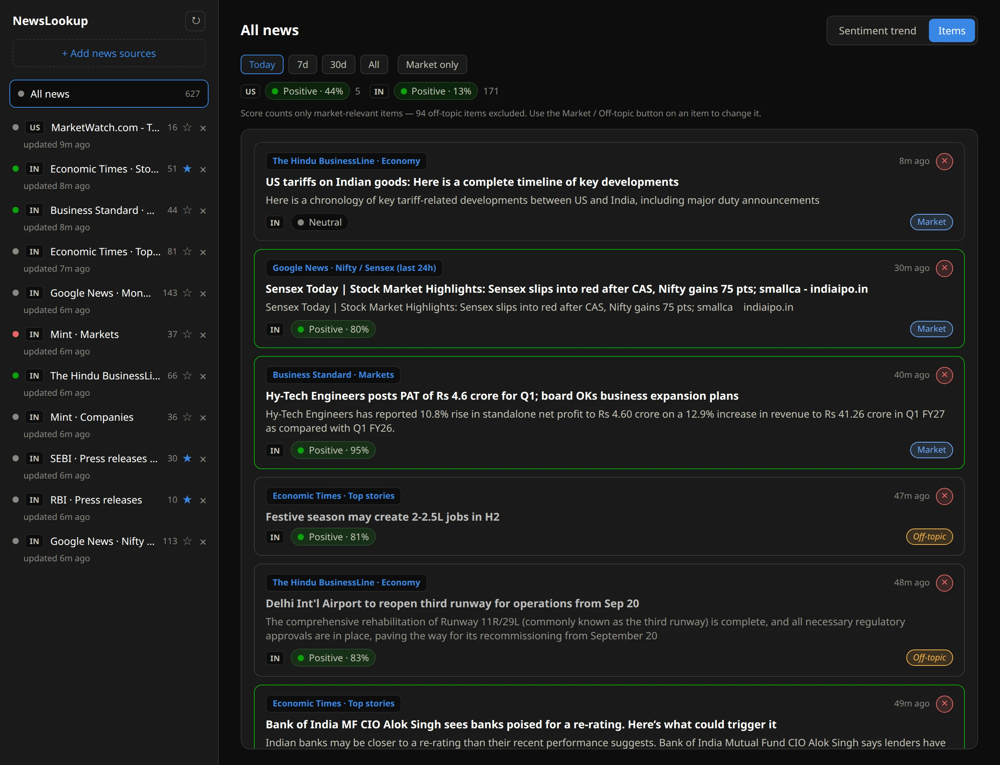
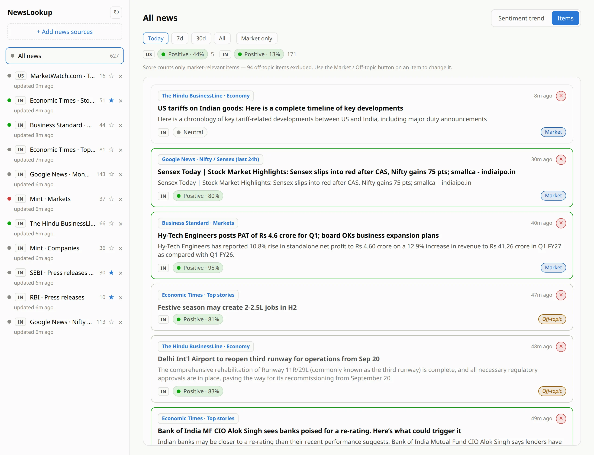
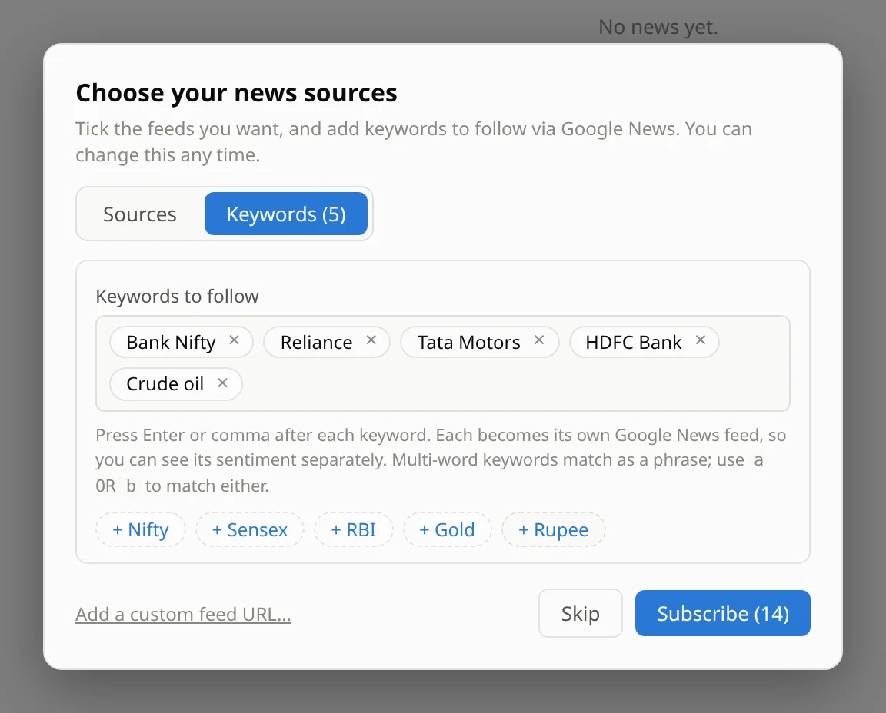
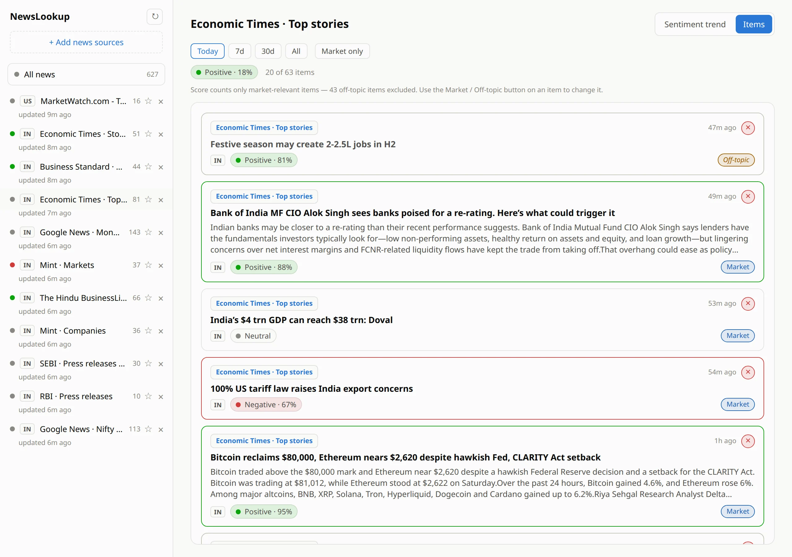
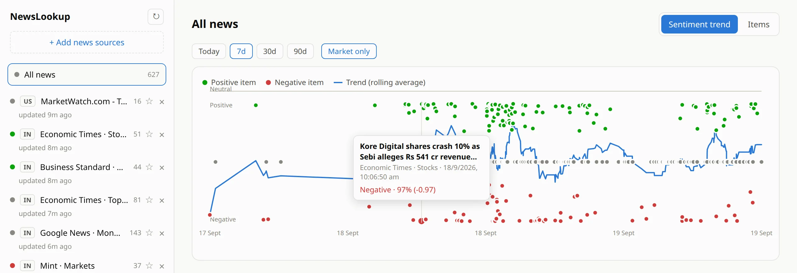
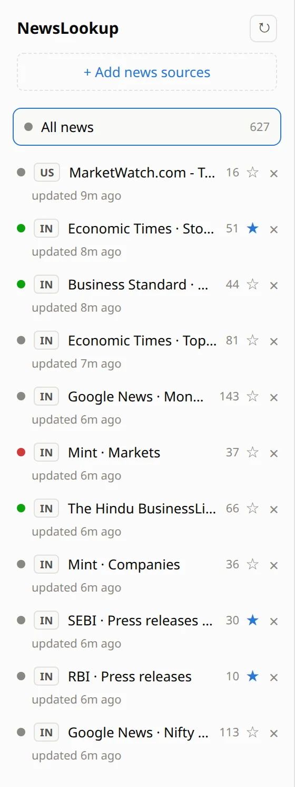

You can't watch a dozen news sites at once. NewsLookup pulls them into one live feed, scores every headline positive, negative or neutral, and shows you where the mood is turning — on your own desktop.
Runs on your PC · no account · no API key

One real day in NewsLookup, 19 Sept 2026, Indian and US market sources.
Markets react to news in minutes. But the news is scattered across business portals, exchange and regulator notices, and a flood of general stories. Nobody can read all of it — so something important always slips past.
Economic Times, Moneycontrol, Mint, Business Standard, SEBI and RBI notices — every tab is another chance to miss a story.
Personal-finance columns, festival features and lifestyle stories sit between the headlines that actually matter.
You need to know in seconds whether the news is turning bullish or bearish — not after reading two hundred articles.
NewsLookup collects all the sources you follow into a single newest-first list. Each headline carries its own mood badge and a confidence percentage, and strong stories get a green or red edge — so a quick scroll tells you what deserves your attention.

You don't need a source in the catalog. Type Reliance, HDFC Bank or Crude oil and NewsLookup turns it into its own live Google News search — every headline scored, with a mood of its own, so your position never dissolves into the crowd.
a OR b to catch either, or use your own quotes.
Add as many keywords as you like — Enter or comma after each.
A stock, a sector, a commodity, a regulator — whatever moves your portfolio.
Each keyword becomes its own live search of Google News (English, India edition), checked every 30 minutes.
Every headline is scored positive, negative or neutral, and each keyword gets its own sentiment and trend.
General news feeds are full of stories that have nothing to do with your trades. NewsLookup checks every headline and labels it Market or Off-topic. Off-topic items stay visible but dimmed, and they don't count toward the sentiment score.

Every headline is a dot: green for positive, red for negative, grey for neutral. The blue line is the rolling average, so a run of bad news shows up as a slide you can see coming instead of a surprise. Hover any dot to read the story behind it.


A busy feed can shout down a quiet one that matters more. NewsLookup blends your sources fairly: each source gets one vote, however many stories it publishes, and any source you star counts three times. Give the regulators and your best market desk more say, and the overall mood follows.
Every source is re-checked every 30 minutes in the background, or on demand with one click. Only new headlines are scored.
Scoring uses FinBERT, a model trained on financial text, running locally. No API keys, no per-headline fees.
Every scored headline is saved on your computer, so the trend chart can look back weeks. Items you delete stay deleted.
Follows your system theme, so it's comfortable on a late-night screen next to your trading terminal.
Pick the build for your computer. Setup takes a couple of minutes, mostly the one-time sentiment model download.
| Platform | Package | Approx. size | |
|---|---|---|---|
| Windows 10 / 11 (64-bit) | Installer (.exe) | 12 MB | Download |
| Windows 10 / 11 (64-bit) | Portable app (.exe, no install) | 27 MB | Download |
| Linux (64-bit) | Native executable | 26 MB | Download |
One feed. Every headline scored. Nothing sent to a cloud AI.
Download for Windows Download for LinuxNewsLookup is an information tool, not investment advice. Sentiment scores are a model's reading of headline tone and can misjudge an individual headline — use them to decide what to read first, and rely on the overall trend rather than any single badge. Screenshots show real headlines scored by the app on 19 Sept 2026.